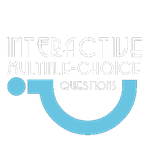
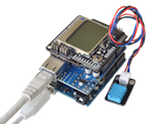
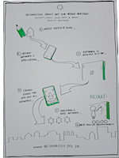

Victor Jolissaint
Innovation enthusiast,
with lots of ideas...
and I cook pasta like a chef!
 About me
About me
I'm a french guy, living in Paris, France. I like to code, to learn and find new ways to use things. Enthusiastic about innovation, I have an entrepreneurial spirit with a lot of ideas shaking in...
By the way, I'm finishing a master degree in engineering but if you want to know more about that, check out my résumé in English or French.
I dream about working abroad to explore another culture and meet new people.
More...
Feb. 2012 Interactive-MCQ - Paris, FR
I'm co-creator of Interactive-MCQ app. The project has began in febuary 2012 to participate to a programming challenge organised by Alten. Interactive-MCQ is a mobile application that allow users to create, share and answer multiple-choice questions. The aim is to provide an app to easily poll an audiance and directly get the results.
Jan. 2012 FabLab - Brest, FR
I really like to find new way to use things or try to build new things. I naturally took pleasure by participating in a FabLab week at Télécom Bretagne. I have used Arduino to build a module to monitor humidity and temperature and display it on a LCD screen. This module can also send informations to a web server to store and graph these data. The project has been post to Github and is illustrated with a poster.
{kind=link}
Oct. 2011 Startup WE - Nantes, FR
My participation to the second Startup Week-end Nantes (#swna) has been a nice experience. During more than 54 hours, we have challenged lot of ideas and met number of people around the goal of innovation and entrepreneurship. The final pitch slides of my team is available here, but our project is still idle.
Jun. 2011 CDIO Academy - Copenhagen, DK
The 2011 CDIO international academy was focused on Smarter Megacities. I have been selected, with 3 classmates, to participated to a 4 days Innovation Camp at Copenhagen, Denmark. We have matured and presented our project: Reconciling street-art and urban heritage. The aim of this project is to allow street artists to submit their creations projects to the vote of citizens.
{kind=link}
About this webite
You love it?
This website is build using:
- Foundation responsive framework ;
- Zocial CSS3 buttons ;
- Deziner Folio icons ;
- Subtle Patterns background ;
- And some adjustments by myself.
Contact: victor [at] jolissaint.net
×